Hover over each icon to reveal their final place, including the winner and podium
Shawn Thealex
Qualified with Galvin Win
Final Standing:
9th Place
Sal Mulder
Qualified with 2 Wins
Final Standing:
13th Place
Harry Bearsley
Qualified with 2 Wins
Final Standing:
Season Champion
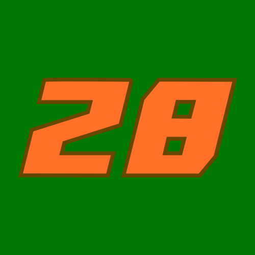
Gabriel Jace
Qualified with 2 Wins
Final Standing:
11th Place
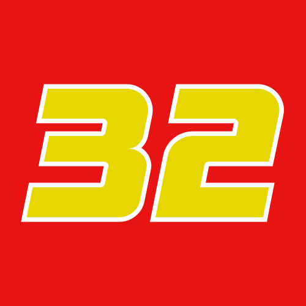
Tony Tyson
Qualified with 2 Wins
Final Standing:
3rd Place
Garth Biello
Qualified with Tarhoska Win
Final Standing:
Runner-Up
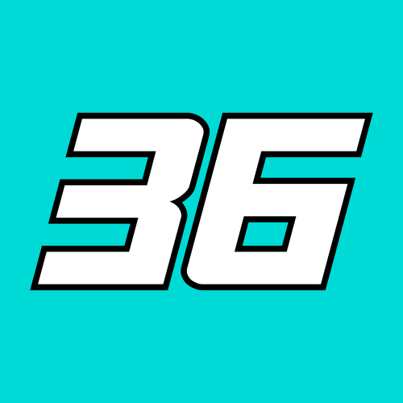
Fredrick Flageagle
Qualified with Queston Win
Final Standing:
4th Place
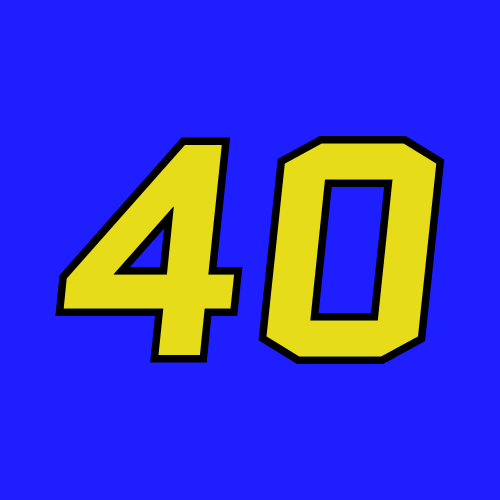
Chester Rattiel
Qualified with Gibson Park Win
Final Standing:
7th Place
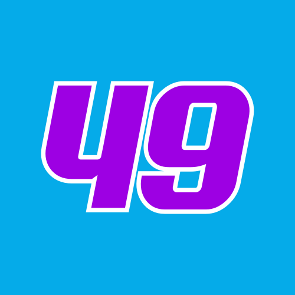
Eli Ohn
Qualified with Tarhoska Win
Final Standing:
16th Place
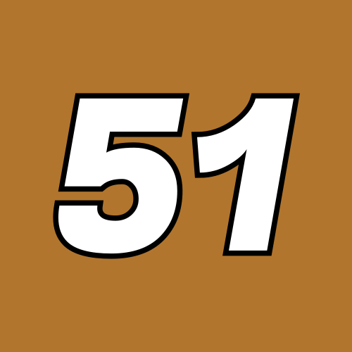
Hutch Garrison
Qualified with 2 Wins
Final Standing:
8th Place
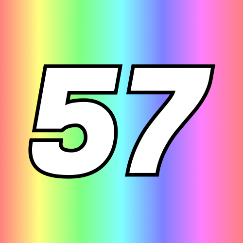
Colton Behonee
Qualified with Almirola Win
Final Standing:
6th Place
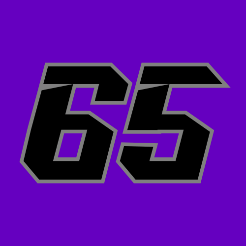
Nelson Britts
Qualified with Fernoval Win
Final Standing:
5th Place
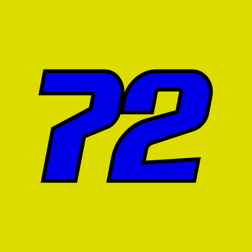
Noah Merrick
Qualified with Circ. Evom. Win
Final Standing:
12th Place
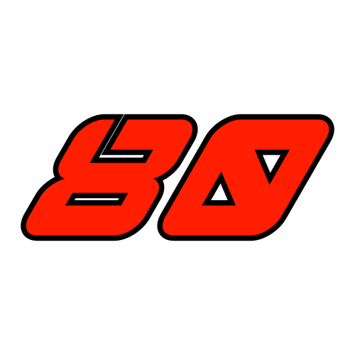
Maverick Cassin
Qualified with 2 Wins
Final Standing:
14th Place
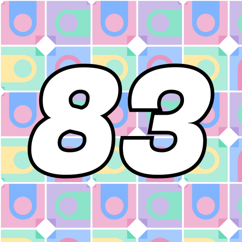
Scott Teika
Qualified with 2 Wins
Final Standing:
10th Place
Todd Jameson
Qualified with Scaleybark Win
Final Standing:
15th Place